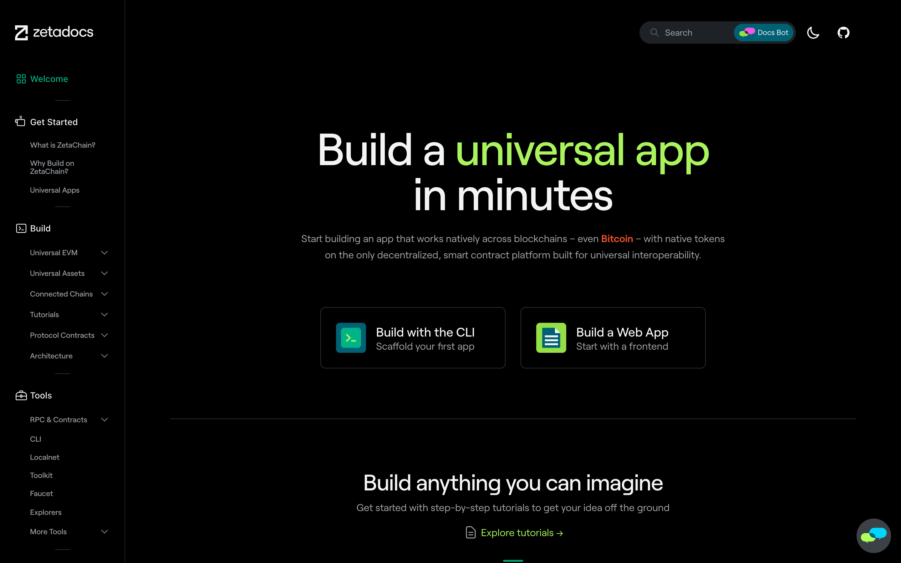
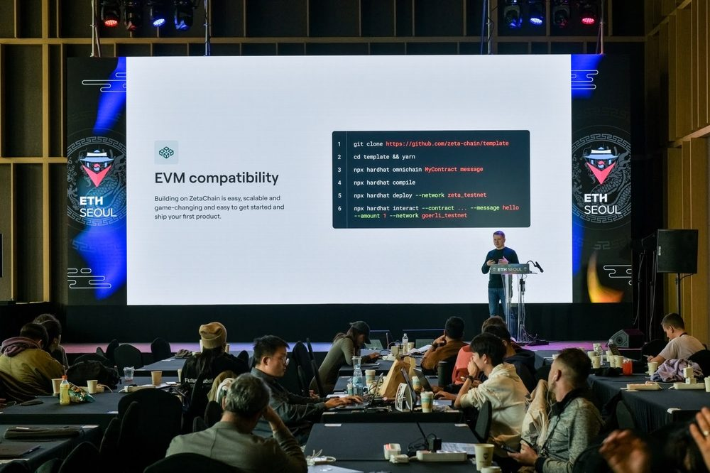
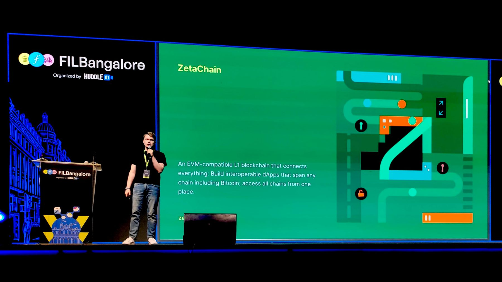
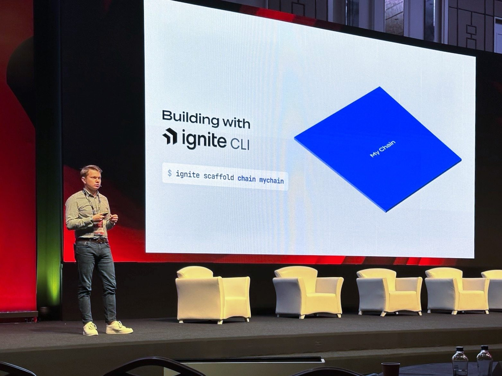
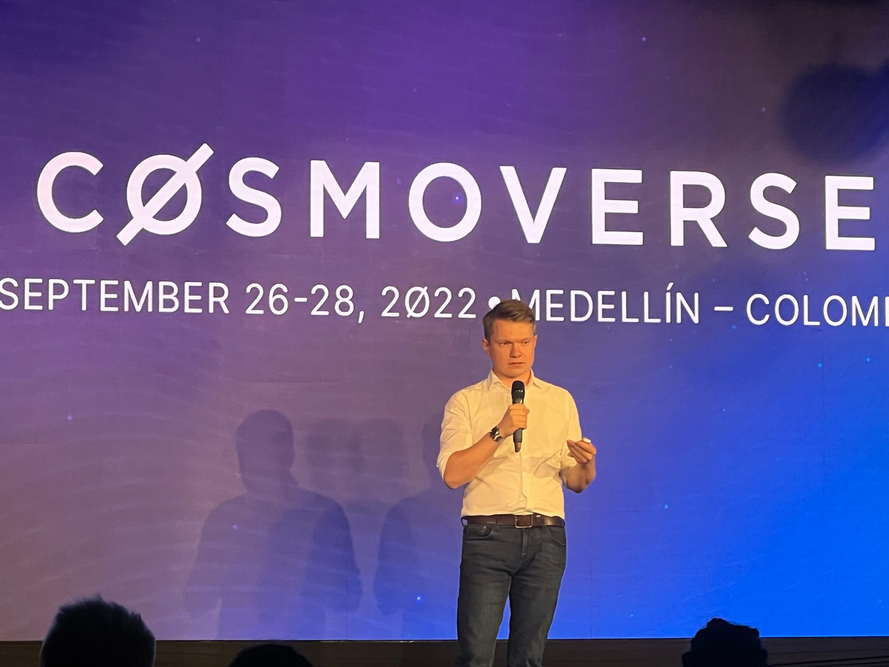
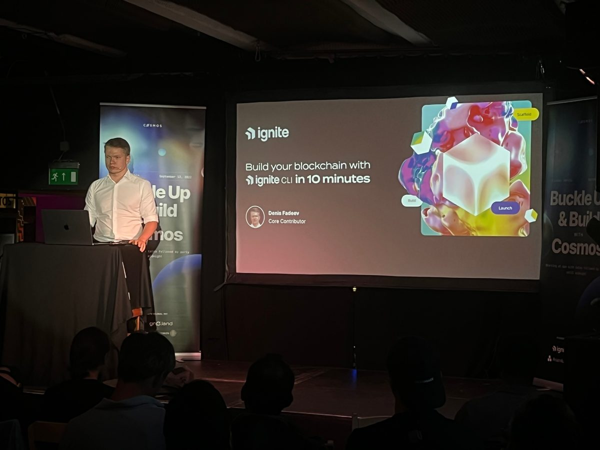

22 min
11 min
15 min
17 min
33 minTalks
- 2024Multichain Day, TOKEN2049Panel: Building the next generation of blockchain infra▶ 31 min
- 2024Restaking & Infra Day, DubaiBringing Bitcoin to Web3▶ 17 min
- 2024DoraHacks Appchain Day, Hong KongPanel: Why appchains?▶ 31 min
- 2024Web3 Festival, Hong KongBring Bitcoin to Web3▶ 15 min
- 2024ETHSeoulBring BTC to Web3▶ 22 min
- 2023FILBangalore, BengaluruOmnichain dApps with ZetaChain▶ 11 min
- 2023Polygon stageZetaChain docs walkthrough
- 2023ETH Hong KongPanel
- 2023Cosmoverse, IstanbulPanel
- 2023ETHGlobal ParisOmnichain contracts with ZetaChain▶ 17 min
- 2022Istanbul Blockchain WeekCreate and launch your dApp as an app chain in just minutes▶ 15 min
- 2022Cosmoverse, MedellínIgnite Chain Launch▶ 17 min
- 2022Buckle Up & Build CosmosBuild your blockchain with Ignite CLI in 10 minutes▶ 33 min
- 2021Blockchain Life, MoscowWhat is Cosmos
- 2021Panel